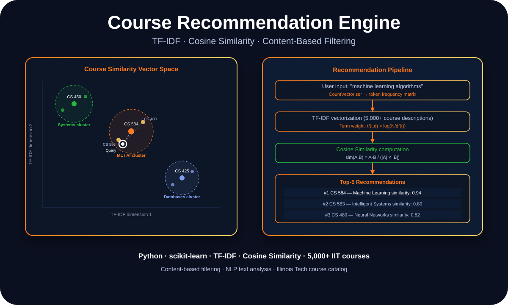

Applied AI · NLP · Content-Based Filtering
Course Recommendation Without Ratings: TF-IDF and Cosine Similarity on 5,000 Courses

Danish Nadar
AI Engineer · Illinois Institute of Technology
Most recommendation engines lean on ratings data. IIT's course catalog doesn't have that. Here's how TF-IDF vectorization and cosine similarity built a content-based recommender that works without a single user review.

Course similarity vector space — ML cluster, systems cluster, and database cluster by TF-IDF
The cold start problem: recommending without history
Collaborative filtering — the approach used by Netflix, Spotify, and most large-scale recommenders — requires usage data. Which users took which courses. Which sequences led to success. Which combinations correlated with good outcomes. Without that data, collaborative filtering has nothing to work with.
A university course catalog doesn't have that data in a usable form. What it does have is descriptions — sometimes detailed, sometimes sparse, but always text. Content-based filtering starts from the text itself: instead of asking "what did similar users take next?", it asks "what courses are semantically similar to what this student is looking for?"
The technical challenge is turning unstructured course descriptions into a representation that supports meaningful similarity comparisons at scale.
TF-IDF: turning words into weighted vectors
TF-IDF (Term Frequency-Inverse Document Frequency) gives each term in a document a score based on two factors: how often it appears in this document (TF), and how rare it is across all documents (IDF). Terms that appear frequently in one course description but rarely across all courses are the most discriminating — they tell you what makes that course unique.
Common words like "students" or "introduction" appear across nearly every course, so IDF weights them down toward zero. Domain-specific terms like "convolutional neural network" or "relational algebra" appear rarely, so they get high weights. The result is a vector for each course that emphasizes its distinctive content.
Over 5,000 course descriptions, this produces a matrix where each row is a course and each column is a term weight. Cosine similarity between any two rows then gives you how conceptually close those courses are, regardless of the specific words used.
What the similarity clusters revealed
When you visualize the TF-IDF vectors using dimensionality reduction, clear clusters emerge: machine learning courses cluster together, operating systems courses cluster together, database courses cluster together. The math works — similar courses are actually close to each other in the vector space, and dissimilar ones are far apart.
The interesting edge cases were courses that landed between clusters — courses that genuinely span multiple domains. A course on "Machine Learning for Healthcare" sits between the ML cluster and the biology cluster. The similarity scores actually capture that ambiguity: it gets recommended alongside both ML-heavy courses and biomedical ones, which is the right behavior.
Approach
TF-IDF vectorization · Cosine similarity · Content-based filtering · 5,000+ IIT course descriptions
Stack
Python · scikit-learn · pandas · CountVectorizer · TfidfVectorizer